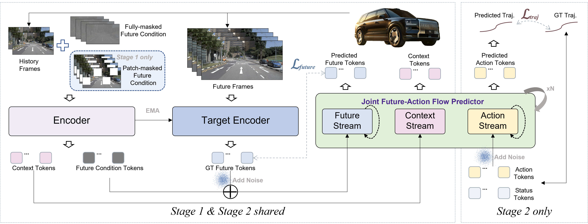
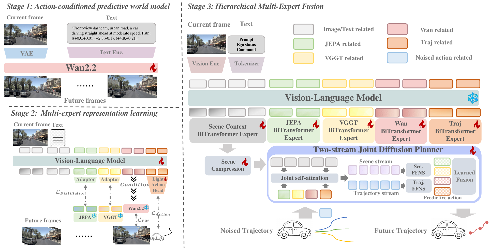
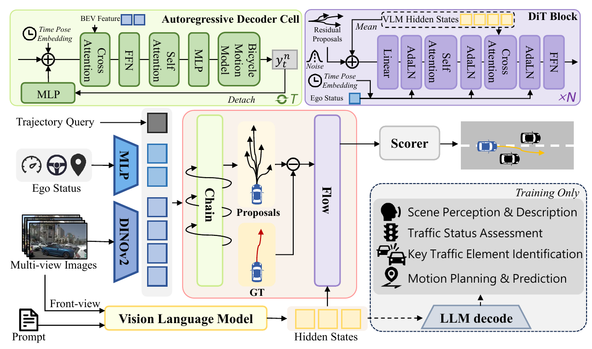
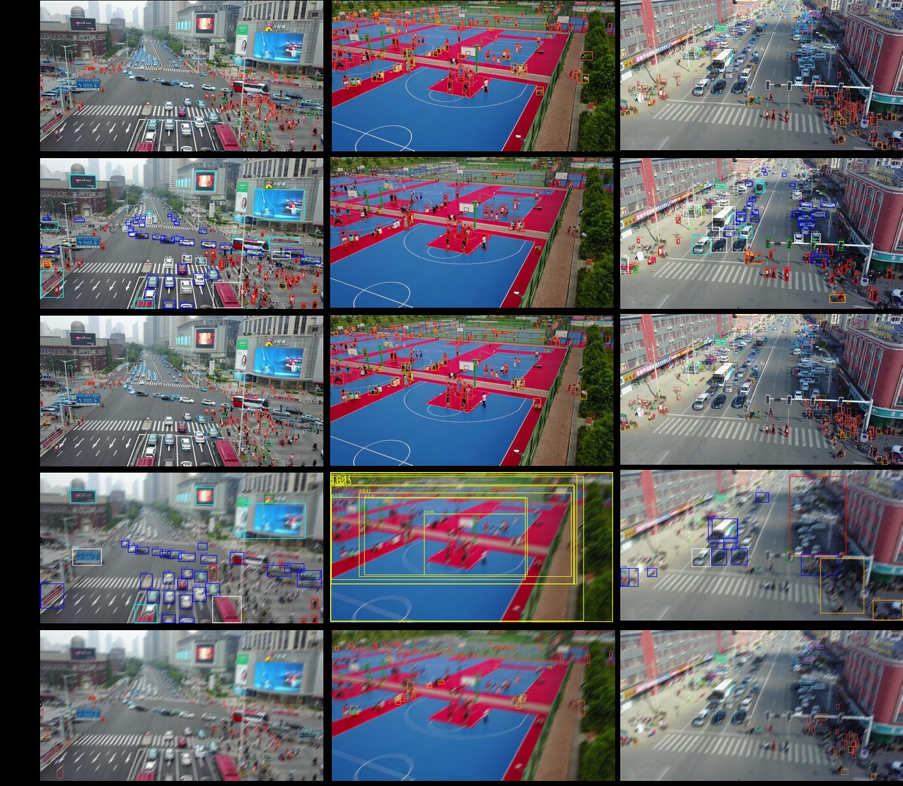

01 / ABOUT
让模型理解场景，也理解下一步。
我目前在东南大学综合时空网络与装备全国重点实验室攻读硕士学位，关注端到端自动驾驶、生成式世界模型、轨迹预测与计算机视觉。我的工作横跨算法研究和工程落地，从多模态场景编码、扩散轨迹生成，到真实驾驶数据上的训练与评估。
End-to-End DrivingWorld ModelsTrajectory PredictionComputer Vision
- 8
- 篇论文
- 2
- 项授权发明专利
- 6
- 项国家级竞赛奖
WA-JEPA 作为公司战略级工作，相关成果将接受知名媒体专题访谈。
WA-JEPA 同时登顶 NAVSIMv2 开环榜单与 HUGSIM 闭环榜单，并获自动驾驶之心专题报道。
ChainFlow-VLA 登顶 NAVSIMv1 公开榜单，并获自动驾驶之心专题报道。
获评江苏省三好学生。
两次获得求是校长奖章。该奖项面向全校四万余名学生，每年仅十余人获此荣誉，并在全校范围内公开表彰。
博世中国中央研究院
端到端 / 世界模型算法实习生
负责 OneModel 的 DrivePath 轨迹预测模块，面向 11 万 clips、340 万帧、4 视角真实驾驶数据构建多源编码体系；研发 query-centric 与条件扩散两类轨迹预测方案，并参与基于 EDM + PPO 的闭环交通仿真。
TransformerDiffusionRLlib / PPO3DGS
清华大学智能产业研究院求之科技
多模态算法实习生
参与 Airbot Play 机械臂感知模块研发，使用 CLIP/VLM 建立视觉—语言对齐表征，结合目标检测与 GPT-4V 完成开放类别目标选择和任务语义解析。
CLIPVLMDetectionRobotics
北京百度网讯科技有限公司飞桨部门
校园深度学习社区负责人
组织算法复现、项目实践与竞赛指导，围绕 YOLO、DETR 和 PaddleDetection 开展复杂场景目标检测与边缘部署，带队获得多项国家级和省级奖项。
PaddleDetectionYOLODETREdge AI
代表论文 · Selected papers

AAAI
WA-JEPA: Rethinking the Video JEPA Paradigm for World-Action Modeling in Autonomous Driving
世界模型 · JEPA

NeurIPS
CoWorld-VLA: Thinking in a Multi-Expert World Model for Autonomous Driving
世界模型 · VLA · MoE

NeurIPS
ChainFlow-VLA: Causal Flow Planning with Vision-Language Models
VLA · NAVSIMv1 榜单 Top 1
专利 · Patents
PATENT · GRANTED一种智能制造货架存储方法及环绕式货架机构
发明专利 · 第一发明人 · 申请号 202410958855.9
查看证明文件一种基于农机状态与农田环境的农业作业路径规划装置及其方法
发明专利 · 第三发明人 · 申请号 202410681595.5
查看证明文件

Computer Vision · 2026
UAV-Det
面向高速无人机运动模糊场景的实时小目标检测框架。通过模糊感知空间聚合、自适应对齐重采样与选择性冲突调制，使 APS 相对提升 56.4%，同时保留实时部署能力。
GitHub01Road
Intelligence
Detection · National 1st Prize
道路缺陷目标检测
围绕 YOLO、RT-DETR、Deformable DETR、DEIM 和 D-Fine 完成基线选型、训练优化、后处理改进与 Docker 部署，获得全球校园人工智能算法精英大赛国家一等奖。
GitHub02Perception
to Action
Edge AI · Granted Patent
智能物流仓储系统
从物体识别、机械臂抓取到运输、码放和数字孪生，完整设计一套边缘计算驱动的仓储自动化流程；环绕式货架机构相关发明专利已获授权。
Demo03Vision
in Motion
Autonomous Systems · National 2nd Prize
智能汽车循迹与任务识别
采用上下位机协同架构，融合 OpenCV 逆透视与八邻域路径生成、并行图像处理及轻量化目标识别，并在百度 EdgeBoard 上完成部署。
Demo
道路病害目标检测 · 国家一等奖第五届全球校园人工智能算法精英大赛
AIGC 驱动的小样本分类 · 国家三等奖第五届全球校园人工智能算法精英大赛
人工智能创意赛 · 全国复赛三等奖中国高校计算机大赛全国复赛（区域选拔）
智慧物流（B）· 全国二等奖睿抗机器人开发者大赛全国总决赛
智慧仓储 · 全国三等奖RoboCom 机器人开发者大赛 CAIR 工程竞技赛道
完全模型组 · 国家二等奖第十七届全国大学生智能汽车竞赛
青年红色筑梦之旅赛道 · 三等奖“建行杯”江苏大学生创新大赛（开路先锋项目）
道路病害目标检测 · 省一等奖全球校园人工智能算法精英大赛省赛
AIGC 驱动的小样本分类 · 省二等奖全球校园人工智能算法精英大赛省赛
智能物流搬运赛项 · 省一等奖江苏省大学生工程实践与创新能力大赛
“互联网+”创新创业大赛 · 省一等奖第十二届江苏省大学生创新创业大赛
完全模型组 · 华东赛区二等奖第十八届全国大学生智能汽车竞赛
创意组 · 华东赛区三等奖第十八届全国大学生智能汽车竞赛
智慧物流（B）· 省二等奖睿抗机器人开发者大赛
“吐雾喷匀”· 五星级项目江苏省“金种子”孵育项目
智慧仓储 · 省二等奖RoboCom 机器人开发者大赛
完全模型组 · 华东赛区二等奖第十七届全国大学生智能汽车竞赛
智能驾驶赛项 · 江苏省三等奖第二十四届中国机器人及人工智能大赛